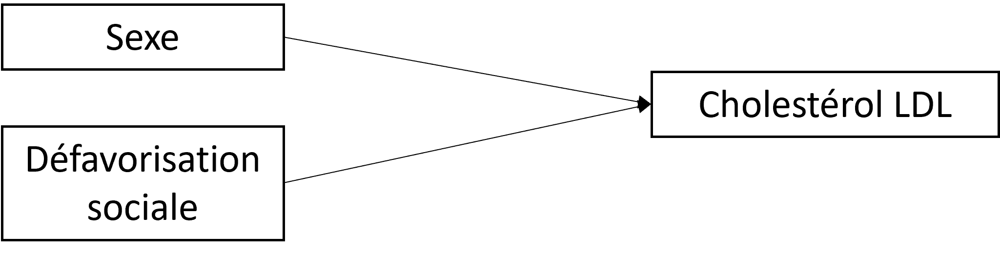
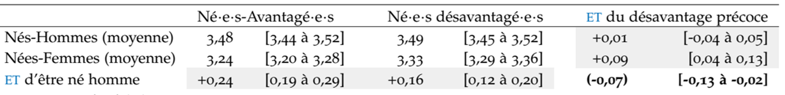

Chapitre 14 Exemple 2 - Y quantitatif
14.1 Formuler les objectifs
Dans cette étude [11], on s’est intéressé à :
- comment l’effet du sexe sur le taux de cholestérol LDL vers 45 ans varie en fonction de la défavorisation sociale précoce,
- comment l’effet de la défavorisation sociale précoce sur le taux de cholestérol LDL varie en fonction du sexe.
La démarche ici est explicative : on cherche à comprendre des mécanismes causaux.
A partir de la formulation des objectifs, on pourrait dire qu’on s’intéresse ici plutot à deux modifications d’effet. On va donc devoir à la fois agir sur le sexe \(\small do(S)\) et sur la défavorisation sociale \(\small do(D)\). Donc la démarche, en fait, sera plutôt une analyse d’interaction \(\small do(S,D)\)
14.2 Stratégies et méthodes
Le DAG (sans les médiateurs) était :

Les estimands étaient définis sur l’échelle additive par :
- La modification de l’effet du sexe en fonction par la défavorisation sociale précoce :
- \(\small (Y_{s=1|d=0} - Y_{s=0|d=0}) - (Y_{s=1|d=1} - Y_{s=0|d=1})\)
- ou \(\small (Y_{s=1,d=0} - Y_{s=0,d=0}) - (Y_{s=1,d=1} - Y_{s=0,d=1})\)
- La modification de l’effet de la défavorisation sociale précoce par la sexe
- \(\small (Y_{d=1|s=0} - Y_{d=0|s=0}) - (Y_{d=1|s=1} - Y_{d=0|s=1})\)
- ou \(\small (Y_{d=1,s=0} - Y_{d=0,s=0}) - (Y_{d=1,s=1} - Y_{d=0,s=1})\)
Les deux formulations sont ici équivalentes car il n’y pas de facteurs de confusion, donc, par exemple, \(\small Y_{d=1|s=0} = Y_{s=0|d=1} = Y_{d=1,s=0}\)
L’estimateur : Les effets ont été estimés par g-computation (standardisation par régression) [10]. Des régressions linéaires ont été utilisées pour estimer les potential outcomes pour chaque scénario, désignées par \(\small \overline{Q}(S, D) = E(Y|S, D)\). A partir des fonctions \(\small \overline{Q}(S, D)\) estimées, nous avons prédit la valeur de l’outcome Y pour chaque individu i pour chaque scénario. Les valeurs moyennes de Y dans chaque scénario vont ensuite nous permettre d’estimer les estimands selon leurs définitions précisées ci-dessus. Ces modèles\(\small \overline{Q}(S, D)\) vont comprendre 2 variables : le sexe et la défavorisation sociale précoce (il n’y a pas ici de facteurs de confusion).
14.3 Analyse descriptive
Dans cette population (N=17 272), il y avait 51,4% d’hommes et 60,5% de personnes ayant été précocement défavorisées.
On peut commencer par décrire les moyennes de cholestérol dans chaque catégorie de sexe et de défavorisation sociale :
| Sexe | Défavorisation | Mean(Chol LDL) |
|---|---|---|
| Male | Non | 3.57 |
| Male | Oui | 3.60 |
| Female | Non | 3.24 |
| Female | Oui | 3.37 |
14.4 Analyse exploratoire
La sortie d’une modèle linéaire simple serait :
# Call:
# lm(formula = t8_ldl ~ as.factor(sex) + as.factor(soc_group) +
# as.factor(sex) * as.factor(soc_group), data = ba_1)
#
# Coefficients:
# Estimate Std. Error t value Pr(>|t|)
# (Intercept) 3.24270 0.01594 203.475 < 2e-16 ***
# as.factor(sex)1 0.32553 0.02227 14.616 < 2e-16 ***
# as.factor(soc_group)2.Défav 0.12614 0.02052 6.148 8.02e-10 ***
# as.factor(sex)1:as.factor(soc_group)2.Défav -0.09473 0.02863 -3.308 0.000941 ***
# ---
# Signif. codes: 0 ‘***’ 0.001 ‘**’ 0.01 ‘*’ 0.05 ‘.’ 0.1 ‘ ’ 1
# On peut en déduire (échelle additive) que :
- L’effet du sexe (d’être homme plutot que femme) est :
- Quand on est favorisé : \(\small DR(S|D=0) = +0.326\) mmol/L
- Quand on est défavorisé : \(\small DR(S|D=1) = 0.326 - 0.095 =\) +0.231 mmol/L
- L’effet de la défavorisation est :
- Quand on est une femme : \(\small DR(D|S=0) = +0.126\) mmol/L
- Quand on est un homme : \(\small DR(D|S=1) = 0.126 - 0.095 =\) +0.031 mmol/L
- L’effet d’être un homme et défavorisé
- plutot que femme et favorisé est
- \(\small DR(D,S) = 0.326 + 0.126 - 0.095 =\) +0.357 mmol/L
- L’effet d’interaction/modification d’effet est : \(\small AI = -0.095\) mmol/L
On pourrait aussi déduire :
- \(\small Y_{00} = 3.24\) mmol/L
- \(\small Y_{10} = 3.243 + 0.326 =\) 3.57 mmol/L
- \(\small Y_{01} = 3.243 + 0.126 =\) 3.37 mmol/L
- \(\small Y_{11} = 3.243 + 0.326 + 0.126 - 0.095 =\) 3.6 mmol/L
14.5 Analyse confirmatoire
Si l’on utilise le package proposé par B Lepage pour réaliser cet analyse avec la TMLE (effets d’intéraction calculés à partir des paramètres d’une modèle structurel marginal estimé à l’aide du package R ltmle), les résultats sont :
| A2=0 | A2=1 | RD.A2|A1 | |
|---|---|---|---|
| A1=0 | \(p_{00}\)=3.243 [3.213,3.273] | \(p_{01}\)=3.369 [3.344,3.394] | 0.126 [0.087,0.165] |
| A1=1 | \(p_{10}\)=3.568 [3.538,3.598] | \(p_{11}\)=3.6 [3.574,3.625] | 0.031 [-0.008,0.071] |
| RD.A1|A2 | 0.326 [0.283,0.368] | 0.231 [0.195,0.267] | |
| a additive Interaction = -0.095 [-0.15;-0.039] |
On retrouve des résulats qui peuvent être intérprétés ainsi :
- l’effet d’être un homme (ou “la différence H-F) est moins fort de additive Interaction = -0.095 [-0.15;-0.039] mmol/L lorsqu’on est défavorisé précocement
- l’effet de la défavorisation est moins fort de additive Interaction = -0.095 [-0.15;-0.039] mmol/L chez les hommes
En réalité, on a réalisé cette analyse par g-computation (voir chapitre 10) sur des données imputées et boostrappées (l’exemple ci-dessus a été réalisé sur une seule des bases bootstrappées, ce qui explique les différences), et les résultats, présentées selon les recommandations modifiées de Knol et VanderWeele, étaient:
